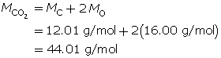
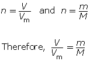

Module 3—Behaviour of Gases
 Read
Read
For clarification of molar volume of gases, read the information on pages 169 and 170 in your textbook. You will also find out about the calculations involved in converting a volume of gas at one of the standard conditions into moles of gas.
 Self-Check
Self-Check
SC 1. Hydrogen gas can be used in weather balloons because of its low density. The volume occupied by 4.50 mol of hydrogen at SATP is
- 109 L
- 111 L
- 112 L
- 113 L
SC 2. Hydrogen gas can be used in weather balloons because of its low density. The volume occupied by 4.50 mol of hydrogen at STP is
- 99.1 L
- 101 L
- 102 L
- 112 L
SC 3. Nitrogen gas is an important gas in artificial breathing apparatus. The number of moles of nitrogen gas in 100 L of pure nitrogen at STP is
- 4.46 mol
- 4.03 mol
- 3.81 mol
- 2.76 mol
SC 4. Nitrogen gas is an important gas in artificial breathing apparatus. The number of moles of nitrogen gas in 100 L of pure nitrogen at SATP is
- 4.46 mol
- 4.03 mol
- 3.81 mol
- 2.76 mol
Self-Check Answers
SC 1. C
SC 2. B
SC 3. A
SC 4. B
In some situations the mass of the gas is able to be measured or is communicated. From your study of gases in this unit, you will understand why a value for mass is often converted into a volume for that gas. What calculation is necessary for this conversion?
Molar Mass
In previous science courses you learned how to calculate moles of a substance from mass. Molar mass is the value used to convert mass to moles. Follow the example below to review this conversion.
Example 2
Carbon dioxide is a greenhouse gas. Convert 1.5 kg of carbon dioxide into moles.
Step 1: Write the chemical formula for carbon dioxide.
CO2
Step 2: Determine the molar mass of carbon dioxide. The molar mass of each element is found on the periodic table.

Step 3: Determine the number of moles.
You can combine the two formulas for number of moles, n, to calculate the volume of gas that is available from a known mass of a substance. This is done as follows:

Example 3
What volume does 1.5 kg of carbon dioxide gas occupy at SATP?
Self-Check
SC 5. How many grams of oxygen gas are present in a 5.00-L container at STP?
SC 6. At SATP, what volume will 84.7 g of argon gas occupy?
Self-Check Answers
SC 5.
SC 6